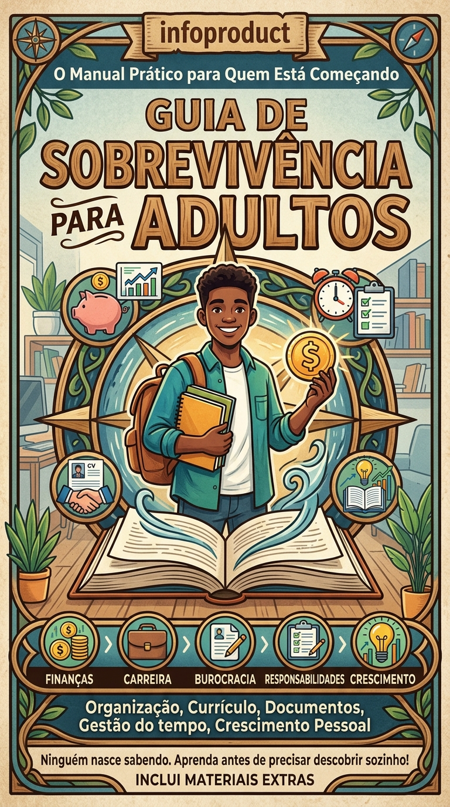

GUIA PRÁTICO PARA QUEM ESTÁ COMEÇANDO
Aprenda de forma simples e prática a lidar com dinheiro, documentos, currículo, emprego e outras responsabilidades da vida adulta.
QUERO CONHECER O MANUAL
Um conteúdo criado para ajudar quem está começando a vida adulta.
Aprenda conceitos básicos para organizar seus gastos, controlar seu dinheiro e planejar melhor sua vida financeira.
Entenda melhor os principais documentos e responsabilidades que fazem parte da vida adulta.
Veja dicas para montar um currículo organizado e começar sua busca por oportunidades profissionais.
Aprenda maneiras simples de organizar tarefas, compromissos e responsabilidades do dia a dia.
Você está começando a vida adulta e sente que ninguém ensinou o que realmente precisava saber?
O Manual para a Vida Adulta reúne informações práticas para ajudar você a enfrentar situações comuns dessa nova fase da vida.
O material aborda temas como organização financeira, documentos, currículo, procura de emprego, organização pessoal e responsabilidades do dia a dia.
Tudo explicado de maneira simples e direta, para que você possa consultar o conteúdo sempre que precisar.
Manual completo sobre vida adulta
Dicas para organização financeira
Orientações para criação de currículo
Dicas para procurar emprego
Orientações sobre documentos e responsabilidades
Materiais extras para facilitar sua organização
"O manual me ajudou a entender várias coisas que eu não sabia sobre organização financeira e currículo."
"Gostei porque o conteúdo é simples e fácil de consultar. Parece que alguém finalmente explicou as coisas sem complicar."
"Achei muito útil para quem está começando a se organizar e assumir novas responsabilidades."
ACESSO AO MATERIAL
R$ 19,90
Acesso ao manual e materiais extras.
QUERO COMPRAR AGORACompra demonstrativa • Botão sem funcionamento
É um material digital com informações e dicas práticas para ajudar pessoas que estão começando a lidar com as responsabilidades da vida adulta.
Para pessoas que estão começando a vida adulta e querem aprender mais sobre organização financeira, documentos, currículo, emprego e rotina.
Sim. O produto é apresentado como um material digital, facilitando o acesso ao conteúdo.